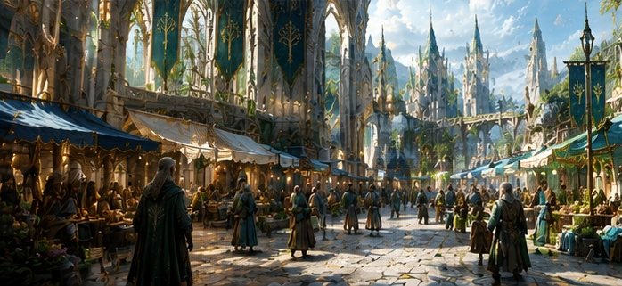
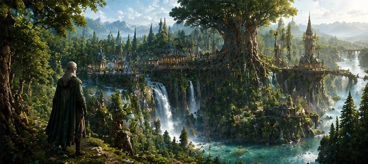
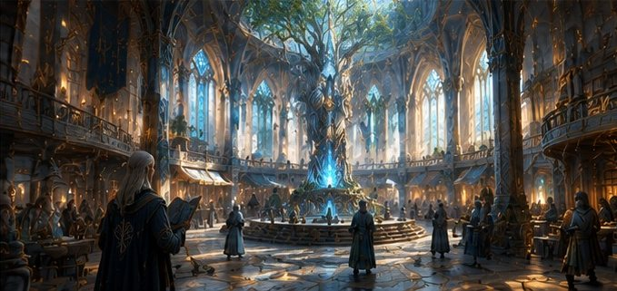

Orindel
✺ Orindel Miasto Siedmiu Wież · Niezależne miasto Athelonu „Nie wszystko, co piękne, musi być wielkie. Nie wszystko, co spokojne, jest pozbawione tajemnic.”
Orindel jest niezależnym miastem położonym na kontynencie Athelon, pośród zielonych terenów i lasów. Liczy około 31 000 mieszkańców. Nie jest metropolią na miarę Stonegardu. Jego urok wynika z harmonii zabudowy, zieleni i różnorodności kultur.
„Nie wszystko, co piękne, musi być wielkie. Nie wszystko, co spokojne, jest pozbawione tajemnic.”
❖Informacje ogólne
Orindel jest niezależnym miastem położonym na kontynencie Athelon, pośród zielonych terenów i lasów. Liczy około 31 000 mieszkańców. Nie jest metropolią na miarę Stonegardu. Jego urok wynika z harmonii zabudowy, zieleni i różnorodności kultur.
W mieście można spotkać przedstawicieli niemal wszystkich ras. Przez stulecia osiedlały się tu różne społeczności, pozostawiając po sobie elementy własnej architektury, rzemiosła i obyczajów.
⌛Historia miasta
Orindel zaczynało jako niewielka osada nad rzeką, w miejscu, gdzie kilka szlaków przecinało zielone tereny Athelonu i schodziło się przy jednym brodzie. Przez pierwsze pokolenia było tu zaledwie kilkadziesiąt domów, młyn i wspólna studnia.
Z czasem do osady zaczęli zjeżdżać rzemieślnicy, uczeni i podróżnicy, którym spodobał się spokój i łagodny klimat. Wieść o dostatku i bezpieczeństwie niosła się coraz dalej, więc przybywały nowe rody i ludy, a każdy z nich przynosił własne obyczaje. Bród zastąpiły mosty, osadę otoczyły mury, a w ciągu kilku pokoleń z nieznanej wioski wyrosło miasto, w którym dziś mieszka około 31 000 osób. Mieszkańcy lubią powtarzać, że Orindel wyrosło z gościnności.
✦Religia i wierzenia
W Orindel nie ma jednej religii ani oficjalnego kultu. Miasto zamieszkują ludzie i inne ludy z różnych zakątków świata, więc każdy przynosi własnych bogów, modlitwy i święta. Wyznawcy Everlight, Tharnoka i wielu innych bóstw mają tu własne kapliczki, a w ogrodach stoją niewielkie świątynki leśnych opiekunów.
Zwyczaj nakazuje szacunek dla cudzej wiary: spory o bogów nie są mile widziane, a znieważenie cudzej świątyni karane jest jak każde inne zakłócanie porządku.
Wyjątkiem jest stosunek do Szkarłatnych. Zdarzają się tu bardzo rzadko, a ci, którzy się pojawiają, spotykają się z chłodną niechęcią i unikaniem. Przechodnie zmieniają stronę ulicy, a drzwi zamykają się przed nimi. Miejscowi mówią krótko, że takich lepiej omijać jak zarazy.
⚖Gospodarka i targowisko

Miasto w dużej mierze utrzymuje się samodzielnie. Mieszkańcy zajmują się rzemiosłem, handlem, usługami, sztuką i lokalną produkcją. Skrajne ubóstwo jest rzadkością, a większość mieszkańców żyje na przyzwoitym poziomie.
Główne targowisko przypomina ogród. Wśród alejek, drzew i fontann znajdują się stoiska z rękodziełem, rzeźbami, obrazami, starymi księgami i nietypowymi przedmiotami.
Niemal wszystko, czego potrzebują mieszkańcy, powstaje w samym mieście albo w jego bezpośredniej okolicy, więc Orindel rzadko zależy od dostaw z zewnątrz. Jedna rzecz jest tu jednak stale poszukiwana: przedmioty magiczne. Miejscowi kupcy skupują je od podróżnych i wędrownych handlarzy, od drobnych talizmanów po różdżki, zwoje i broń, i płacą za nie ponadprzeciętnie dobrze, zwykle złotem, a czasem w zamian za miejscowe rzemiosło. Dlatego karawany z dalekich miast zaglądają tu co jakiś czas, choć regularnego handlu zagranicznego Orindel nie prowadzi.
◆Okolice Orindel
Wokół miasta leżą dwa niewielkie miejsca.
Hartwood
Osada myśliwska około dnia drogi od miasta. Jej mieszkańcy żyją z polowań w okolicznych lasach i sprzedają w Orindel skóry i dziczyznę. Mówi się o niej „wioska kłusowników”, bo nie zawsze pytają, czyje to ziemie.
Karczma „Zielony Bród”
Stoi przy głównym trakcie, kilka mil od bram miasta. Zatrzymują się w niej podróżni i kupcy, a karczmarz zna wszystkie plotki z okolicy. To tutaj wielu handlarzy przekonuje się, czy jest sens wieźć swoje magiczne towary do miasta.
◆Straż miejska
Wielorasowa straż miejska podlega Konsulatowi Siedmiu. Pilnuje bram, patroluje ulice, utrzymuje porządek i reaguje na lokalne zagrożenia. Orindel nie posiada regularnej armii, a straż nie jest zahartowanym wojskiem polowym.
Wyposażenie strażników jest zróżnicowane: od skórzanych pancerzy i kolczug po zbroje płytowe, a nawet rzadkie elementy mithrilowe. Wspólne pozostają detale łączące elficką elegancję, ludzką praktyczność i krasnoludzką solidność.
◆Architektura i układ miasta

Dominują inspiracje elfickie: eleganckie łuki, zdobione fasady, wysokie okna, kolumny i motywy roślinne. Obok nich stoją drewniane domy, kamienne budynki, warsztaty i lokale prowadzone przez przedstawicieli różnych ludów. Jedna z miejscowych gospód jest prowadzona przez krasnoludy.
Zabudowa skupia się wokół centralnej wieży. Główne trakty są na tyle szerokie, by mogły minąć się dwa wozy. Mury wraz z układem zabudowy tworzą rozsądny system obronny, ale Orindel nie przypomina wojskowej twierdzy.
◆Konsulat Siedmiu
Oficjalną władzę w Orindel sprawuje siedmioosobowy Konsulat. Według powszechnego przekonania jego członkowie są wybierani przez społeczność. Jedno miejsce pozostaje obsadzone przez tę samą osobę, podczas gdy pozostałe stanowiska zmieniają się na przestrzeni lat.
Siedziba Konsulatu znajduje się bezpośrednio przy głównej wieży. Jest to jeden z najlepiej strzeżonych obszarów miasta. Kompleks obejmuje sale narad, pomieszczenia administracyjne i wewnętrzne dziedzińce.
◆Siedem wież

Orindel posiada dokładnie siedem wież: jedną centralną oraz sześć rozmieszczonych w różnych częściach miasta. Centralna wieża wyróżnia się jasnym, niemal białym kamieniem, elfickimi zdobieniami i subtelnymi pasmami fioletowo-niebieskiej energii biegnącymi ku górze.
Centralna wieża jest dostępna dla odwiedzających. Jej wnętrze jest znacznie większe, niż można by sądzić po zewnętrznej bryle. Sześć pozostałych wież nie ma oficjalnych nazw ani publicznie przypisanych funkcji.